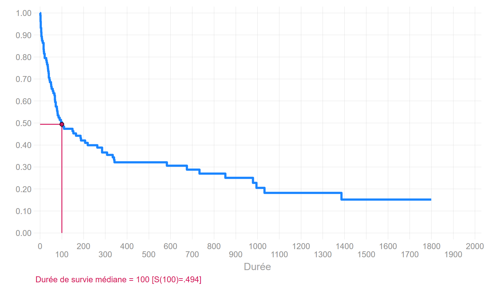

Stata
1 Analyse non paramétrique
1.1 Méthode actuarielle
use "D:\Marc\SMS\FORMATIONS\2017\analyse biographique\A distribuer\transplantation.dta" , clear
ltable stime died, interval(30)
use b, clear
qlt, sas(Heart transplant data)
Beg. Std.
Interval Total Deaths Lost Survival Error [95% Conf. Int.]
-------------------------------------------------------------------------------
0 30 103 22 1 0.7854 0.0406 0.6926 0.8531
30 60 80 14 2 0.6462 0.0475 0.5449 0.7305
60 90 64 12 0 0.5250 0.0498 0.4232 0.6171
90 120 52 5 1 0.4741 0.0499 0.3738 0.5677
120 150 46 1 1 0.4636 0.0499 0.3637 0.5575
150 180 44 2 0 0.4426 0.0498 0.3435 0.5369
180 210 42 3 1 0.4106 0.0495 0.3132 0.5053
210 240 38 1 0 0.3998 0.0494 0.3030 0.4945
240 270 37 1 1 0.3888 0.0492 0.2928 0.4836
270 300 35 2 0 0.3666 0.0488 0.2720 0.4614
300 330 33 1 0 0.3555 0.0486 0.2618 0.4502
330 360 32 3 1 0.3216 0.0478 0.2308 0.4157
360 390 28 0 1 0.3216 0.0478 0.2308 0.4157
390 420 27 0 1 0.3216 0.0478 0.2308 0.4157
420 450 26 0 2 0.3216 0.0478 0.2308 0.4157
480 510 24 0 1 0.3216 0.0478 0.2308 0.4157
510 540 23 0 1 0.3216 0.0478 0.2308 0.4157
540 570 22 0 1 0.3216 0.0478 0.2308 0.4157
570 600 21 1 1 0.3059 0.0479 0.2155 0.4010
600 630 19 0 1 0.3059 0.0479 0.2155 0.4010
660 690 18 1 1 0.2885 0.0483 0.1982 0.3849
720 750 16 1 0 0.2704 0.0485 0.1807 0.3681
840 870 15 1 1 0.2518 0.0486 0.1629 0.3506
900 930 13 0 1 0.2518 0.0486 0.1629 0.3506
930 960 12 0 1 0.2518 0.0486 0.1629 0.3506
960 990 11 1 0 0.2289 0.0493 0.1404 0.3304
990 1020 10 1 0 0.2060 0.0494 0.1192 0.3093
1020 1050 9 1 0 0.1831 0.0489 0.0992 0.2873
1140 1170 8 0 1 0.1831 0.0489 0.0992 0.2873
1320 1350 7 0 1 0.1831 0.0489 0.0992 0.2873
1380 1410 6 1 2 0.1465 0.0510 0.0645 0.2602
1560 1590 3 0 2 0.1465 0.0510 0.0645 0.2602
1770 1800 1 0 1 0.1465 0.0510 0.0645 0.2602
-------------------------------------------------------------------------------
file b.dta not found
r(601);
end of do-file
r(601);
1.2 Méthode Kaplan-Meier
Mode analyse des durées: stset
qui use "D:\Marc\SMS\FORMATIONS\2017\analyse biographique\A distribuer\transplantation.dta" , clear
stset stime, f(died)> lantation.dta" , clear
failure event: died != 0 & died < .
obs. time interval: (0, stime]
exit on or before: failure
------------------------------------------------------------------------------
103 total observations
0 exclusions
------------------------------------------------------------------------------
103 observations remaining, representing
75 failures in single-record/single-failure data
31,938 total analysis time at risk and under observation
at risk from t = 0
earliest observed entry t = 0
last observed exit t = 1,799Estimation de la fonction de survie
sts listrunning D:\Marc\SMS\FORMATIONS\2020\analyse duree Ined\analyse durees\profil> o ...
failure _d: died
analysis time _t: stime
Beg. Net Survivor Std.
Time Total Fail Lost Function Error [95% Conf. Int.]
-------------------------------------------------------------------------------
1 103 1 0 0.9903 0.0097 0.9331 0.9986
2 102 3 0 0.9612 0.0190 0.8998 0.9852
3 99 3 0 0.9320 0.0248 0.8627 0.9670
5 96 2 0 0.9126 0.0278 0.8388 0.9535
6 94 2 0 0.8932 0.0304 0.8155 0.9394
8 92 1 0 0.8835 0.0316 0.8040 0.9321
9 91 1 0 0.8738 0.0327 0.7926 0.9247
11 90 0 1 0.8738 0.0327 0.7926 0.9247
12 89 1 0 0.8640 0.0338 0.7811 0.9171
16 88 3 0 0.8345 0.0367 0.7474 0.8937
17 85 1 0 0.8247 0.0375 0.7363 0.8857
18 84 1 0 0.8149 0.0383 0.7253 0.8777
21 83 2 0 0.7952 0.0399 0.7034 0.8614
28 81 1 0 0.7854 0.0406 0.6926 0.8531
30 80 1 0 0.7756 0.0412 0.6819 0.8448
31 79 0 1 0.7756 0.0412 0.6819 0.8448
32 78 1 0 0.7657 0.0419 0.6710 0.8363
35 77 1 0 0.7557 0.0425 0.6603 0.8278
36 76 1 0 0.7458 0.0431 0.6495 0.8192
37 75 1 0 0.7358 0.0436 0.6388 0.8106
39 74 1 1 0.7259 0.0442 0.6282 0.8019
40 72 2 0 0.7057 0.0452 0.6068 0.7842
43 70 1 0 0.6956 0.0457 0.5961 0.7752
45 69 1 0 0.6856 0.0461 0.5855 0.7662
50 68 1 0 0.6755 0.0465 0.5750 0.7572
51 67 1 0 0.6654 0.0469 0.5645 0.7481
53 66 1 0 0.6553 0.0472 0.5541 0.7390
58 65 1 0 0.6452 0.0476 0.5437 0.7298
61 64 1 0 0.6352 0.0479 0.5333 0.7206
66 63 1 0 0.6251 0.0482 0.5230 0.7113
68 62 2 0 0.6049 0.0487 0.5026 0.6926
69 60 1 0 0.5948 0.0489 0.4924 0.6832
72 59 2 0 0.5747 0.0493 0.4722 0.6643
77 57 1 0 0.5646 0.0494 0.4621 0.6548
78 56 1 0 0.5545 0.0496 0.4521 0.6453
80 55 1 0 0.5444 0.0497 0.4422 0.6357
81 54 1 0 0.5343 0.0498 0.4323 0.6261
85 53 1 0 0.5243 0.0499 0.4224 0.6164
90 52 1 0 0.5142 0.0499 0.4125 0.6067
96 51 1 0 0.5041 0.0499 0.4027 0.5969
100 50 1 0 0.4940 0.0499 0.3930 0.5872
102 49 1 0 0.4839 0.0499 0.3833 0.5773
109 48 0 1 0.4839 0.0499 0.3833 0.5773
110 47 1 0 0.4736 0.0499 0.3733 0.5673
131 46 0 1 0.4736 0.0499 0.3733 0.5673
149 45 1 0 0.4631 0.0499 0.3632 0.5571
153 44 1 0 0.4526 0.0499 0.3531 0.5468
165 43 1 0 0.4421 0.0498 0.3430 0.5364
180 42 0 1 0.4421 0.0498 0.3430 0.5364
186 41 1 0 0.4313 0.0497 0.3327 0.5258
188 40 1 0 0.4205 0.0497 0.3225 0.5152
207 39 1 0 0.4097 0.0495 0.3123 0.5045
219 38 1 0 0.3989 0.0494 0.3022 0.4938
263 37 1 0 0.3881 0.0492 0.2921 0.4830
265 36 0 1 0.3881 0.0492 0.2921 0.4830
285 35 2 0 0.3660 0.0488 0.2714 0.4608
308 33 1 0 0.3549 0.0486 0.2612 0.4496
334 32 1 0 0.3438 0.0483 0.2510 0.4383
340 31 1 1 0.3327 0.0480 0.2409 0.4270
342 29 1 0 0.3212 0.0477 0.2305 0.4153
370 28 0 1 0.3212 0.0477 0.2305 0.4153
397 27 0 1 0.3212 0.0477 0.2305 0.4153
427 26 0 1 0.3212 0.0477 0.2305 0.4153
445 25 0 1 0.3212 0.0477 0.2305 0.4153
482 24 0 1 0.3212 0.0477 0.2305 0.4153
515 23 0 1 0.3212 0.0477 0.2305 0.4153
545 22 0 1 0.3212 0.0477 0.2305 0.4153
583 21 1 0 0.3059 0.0478 0.2156 0.4008
596 20 0 1 0.3059 0.0478 0.2156 0.4008
620 19 0 1 0.3059 0.0478 0.2156 0.4008
670 18 0 1 0.3059 0.0478 0.2156 0.4008
675 17 1 0 0.2879 0.0483 0.1976 0.3844
733 16 1 0 0.2699 0.0485 0.1802 0.3676
841 15 0 1 0.2699 0.0485 0.1802 0.3676
852 14 1 0 0.2507 0.0487 0.1616 0.3497
915 13 0 1 0.2507 0.0487 0.1616 0.3497
941 12 0 1 0.2507 0.0487 0.1616 0.3497
979 11 1 0 0.2279 0.0493 0.1394 0.3295
995 10 1 0 0.2051 0.0494 0.1183 0.3085
1032 9 1 0 0.1823 0.0489 0.0985 0.2865
1141 8 0 1 0.1823 0.0489 0.0985 0.2865
1321 7 0 1 0.1823 0.0489 0.0985 0.2865
1386 6 1 0 0.1519 0.0493 0.0713 0.2606
1400 5 0 1 0.1519 0.0493 0.0713 0.2606
1407 4 0 1 0.1519 0.0493 0.0713 0.2606
1571 3 0 1 0.1519 0.0493 0.0713 0.2606
1586 2 0 1 0.1519 0.0493 0.0713 0.2606
1799 1 0 1 0.1519 0.0493 0.0713 0.2606
-------------------------------------------------------------------------------sts graph
Comparaison des fonctions de survie
Tests du log rank
sts graph, by(surgery)
local test `" "l" "w" "tw" "p" "'
foreach test2 of local test {
sts test surgery, `test2'
}running D:\Marc\SMS\FORMATIONS\2020\analyse duree Ined\analyse durees\profil> o ...
failure _d: died
analysis time _t: stime
Log-rank test for equality of survivor functions
| Events Events
surgery | observed expected
--------+-------------------------
0 | 69 60.34
1 | 6 14.66
--------+-------------------------
Total | 75 75.00
chi2(1) = 6.59
Pr>chi2 = 0.0103
failure _d: died
analysis time _t: stime
Wilcoxon (Breslow) test for equality of survivor functions
| Events Events Sum of
surgery | observed expected ranks
--------+--------------------------------------
0 | 69 60.34 623
1 | 6 14.66 -623
--------+--------------------------------------
Total | 75 75.00 0
chi2(1) = 8.99
Pr>chi2 = 0.0027
failure _d: died
analysis time _t: stime
Tarone-Ware test for equality of survivor functions
| Events Events Sum of
surgery | observed expected ranks
--------+--------------------------------------
0 | 69 60.34 73.105398
1 | 6 14.66 -73.105398
--------+--------------------------------------
Total | 75 75.00 0
chi2(1) = 8.46
Pr>chi2 = 0.0036
failure _d: died
analysis time _t: stime
Peto-Peto test for equality of survivor functions
| Events Events Sum of
surgery | observed expected ranks
--------+--------------------------------------
0 | 69 60.34 6.0505875
1 | 6 14.66 -6.0505875
--------+--------------------------------------
Total | 75 75.00 0
chi2(1) = 8.66
Pr>chi2 = 0.0032Comparaison des rmst
installation de la commande strmst2:
ssc install strmst2strmst2 surgeryrunning D:\Marc\SMS\FORMATIONS\2020\analyse duree Ined\analyse durees\profil> o ...
Restricted Mean Survival Time (RMST) by arm
-----------------------------------------------------------
Group | Estimate Std. Err. [95% Conf. Interval]
---------+-------------------------------------------------
arm 1 | 734.758 133.478 473.145 996.370
arm 0 | 310.168 43.160 225.576 394.760
-----------------------------------------------------------
Between-group contrast (arm 1 versus arm 0)
------------------------------------------------------------------------
Contrast | Estimate [95% Conf. Interval] P>|z|
---------------------+--------------------------------------------------
RMST (arm 1 - arm 0) | 424.590 149.641 699.539 0.002
RMST (arm 1 / arm 0) | 2.369 1.513 3.710 0.000
------------------------------------------------------------------------2 Risques proportionnels
2.1 Modèle semi parametrique de Cox
2.1.1 Estimation du modèle
Avec la correction d’Efron
stcox year age surgery, nolog noshow efronrunning D:\Marc\SMS\FORMATIONS\2020\analyse duree Ined\analyse durees\profil> o ...
Cox regression -- Efron method for ties
No. of subjects = 103 Number of obs = 103
No. of failures = 75
Time at risk = 31938
LR chi2(3) = 17.63
Log likelihood = -289.30639 Prob > chi2 = 0.0005
------------------------------------------------------------------------------
_t | Haz. Ratio Std. Err. z P>|z| [95% Conf. Interval]
-------------+----------------------------------------------------------------
year | .8872469 .0597499 -1.78 0.076 .7775386 1.012435
age | 1.030024 .013931 2.19 0.029 1.003078 1.057693
surgery | .3725733 .1625379 -2.26 0.024 .1584414 .8761021
------------------------------------------------------------------------------stcox year age surgery, nolog noshow efron nohrrunning D:\Marc\SMS\FORMATIONS\2020\analyse duree Ined\analyse durees\profil> o ...
Cox regression -- Efron method for ties
No. of subjects = 103 Number of obs = 103
No. of failures = 75
Time at risk = 31938
LR chi2(3) = 17.63
Log likelihood = -289.30639 Prob > chi2 = 0.0005
------------------------------------------------------------------------------
_t | Coef. Std. Err. z P>|z| [95% Conf. Interval]
-------------+----------------------------------------------------------------
year | -.119632 .0673431 -1.78 0.076 -.251622 .012358
age | .0295819 .0135249 2.19 0.029 .0030735 .0560902
surgery | -.9873215 .4362574 -2.26 0.024 -1.84237 -.1322726
------------------------------------------------------------------------------2.1.2 Test de l’hypothèse PH
Test Grambsch-Therneau sur les résidus de Schoenfeld
/* f(t)=t - par défaut */
estat phtest, detail
/* f(t)= 1-km - solution par défaut de R */
estat phtest, detail kmrunning D:\Marc\SMS\FORMATIONS\2020\analyse duree Ined\analyse durees\profil> o ...
Test of proportional-hazards assumption
Time: Time
----------------------------------------------------------------
| rho chi2 df Prob>chi2
------------+---------------------------------------------------
year | 0.10162 0.80 1 0.3720
age | 0.12937 1.61 1 0.2043
surgery | 0.29664 5.54 1 0.0186
------------+---------------------------------------------------
global test | 8.76 3 0.0327
----------------------------------------------------------------
Test of proportional-hazards assumption
Time: Kaplan-Meier
----------------------------------------------------------------
| rho chi2 df Prob>chi2
------------+---------------------------------------------------
year | 0.15920 1.96 1 0.1620
age | 0.10907 1.15 1 0.2845
surgery | 0.25096 3.96 1 0.0465
------------+---------------------------------------------------
global test | 7.99 3 0.0462
----------------------------------------------------------------Intéraction avec une fonction de la durée
\(f(t)=t\)
stcox year age surgery, nolog noshow efron nohr tvc(surgery) texp(_t)running D:\Marc\SMS\FORMATIONS\2020\analyse duree Ined\analyse durees\profil> o ...
Cox regression -- Efron method for ties
No. of subjects = 103 Number of obs = 103
No. of failures = 75
Time at risk = 31938
LR chi2(4) = 21.58
Log likelihood = -287.32903 Prob > chi2 = 0.0002
------------------------------------------------------------------------------
_t | Coef. Std. Err. z P>|z| [95% Conf. Interval]
-------------+----------------------------------------------------------------
main |
year | -.1230741 .066835 -1.84 0.066 -.2540684 .0079202
age | .0288884 .0134493 2.15 0.032 .0025281 .0552486
surgery | -1.754738 .6743907 -2.60 0.009 -3.07652 -.4329567
-------------+----------------------------------------------------------------
tvc |
surgery | .0022311 .0011024 2.02 0.043 .0000704 .0043917
------------------------------------------------------------------------------
Note: Variables in tvc equation interacted with _t.2.1.3 Introduction d’une variable dynamique (binaire)
Transformation de la base en format long aux temps d’évènement
* Etape 1: créer un vecteur donnant les durées au temps d’évènement. * Etape 2: appliquer ce vecteurs de points de coupure à la fonction survsplit. * Etape 3: modifier la variable transplant (ou créer une nouvelle) à l’aide de la variable wait qui prend la valeur 1 à partir du jour de la greffe, 0 avant.
Etape 1
stset stime, f(died) id(id)running D:\Marc\SMS\FORMATIONS\2020\analyse duree Ined\analyse durees\profil> o ...
id: id
failure event: died != 0 & died < .
obs. time interval: (stime[_n-1], stime]
exit on or before: failure
------------------------------------------------------------------------------
103 total observations
0 exclusions
------------------------------------------------------------------------------
103 observations remaining, representing
103 subjects
75 failures in single-failure-per-subject data
31,938 total analysis time at risk and under observation
at risk from t = 0
earliest observed entry t = 0
last observed exit t = 1,799Etape 2
stsplit, at(failure)running D:\Marc\SMS\FORMATIONS\2020\analyse duree Ined\analyse durees\profil> o ...
(62 failure times)
(3,470 observations (episodes) created)Etape 3
gen tvc = transplant==1 & wait<=_t
sort id _t
list id transplant wait tvc _d _t _t0 if id==10 , noobsrunning D:\Marc\SMS\FORMATIONS\2020\analyse duree Ined\analyse durees\profil> o ...
+--------------------------------------------+
| id transp~t wait tvc _d _t _t0 |
|--------------------------------------------|
| 10 1 12 0 0 1 0 |
| 10 1 12 0 0 2 1 |
| 10 1 12 0 0 3 2 |
| 10 1 12 0 0 5 3 |
| 10 1 12 0 0 6 5 |
|--------------------------------------------|
| 10 1 12 0 0 8 6 |
| 10 1 12 0 0 9 8 |
| 10 1 12 1 0 12 9 |
| 10 1 12 1 0 16 12 |
| 10 1 12 1 0 17 16 |
|--------------------------------------------|
| 10 1 12 1 0 18 17 |
| 10 1 12 1 0 21 18 |
| 10 1 12 1 0 28 21 |
| 10 1 12 1 0 30 28 |
| 10 1 12 1 0 32 30 |
|--------------------------------------------|
| 10 1 12 1 0 35 32 |
| 10 1 12 1 0 36 35 |
| 10 1 12 1 0 37 36 |
| 10 1 12 1 0 39 37 |
| 10 1 12 1 0 40 39 |
|--------------------------------------------|
| 10 1 12 1 0 43 40 |
| 10 1 12 1 0 45 43 |
| 10 1 12 1 0 50 45 |
| 10 1 12 1 0 51 50 |
| 10 1 12 1 0 53 51 |
|--------------------------------------------|
| 10 1 12 1 1 58 53 |
+--------------------------------------------+Estimation du modèle
stcox year age surgery tvc, nolog noshow efron nohrrunning D:\Marc\SMS\FORMATIONS\2020\analyse duree Ined\analyse durees\profil> o ...
Cox regression -- Efron method for ties
No. of subjects = 103 Number of obs = 3,573
No. of failures = 75
Time at risk = 31938
LR chi2(4) = 17.70
Log likelihood = -289.27014 Prob > chi2 = 0.0014
------------------------------------------------------------------------------
_t | Coef. Std. Err. z P>|z| [95% Conf. Interval]
-------------+----------------------------------------------------------------
year | -.1203194 .0673366 -1.79 0.074 -.2522968 .0116579
age | .0304383 .0138999 2.19 0.029 .003195 .0576815
surgery | -.9828934 .4365518 -2.25 0.024 -1.838519 -.1272675
tvc | -.0822128 .3048425 -0.27 0.787 -.6796931 .5152675
------------------------------------------------------------------------------2.2 Modèle (logistique) à temps discret
2.2.1 Mise en forme
use "D:/Marc/SMS/FORMATIONS\2019/analyse durees/a distribuer/transplantation_m.dta", clear
list id year age surgery mois died if id==1, noobsrunning D:\Marc\SMS\FORMATIONS\2020\analyse duree Ined\analyse durees\profil> o ...
(SAVASTATA created this dataset on 01AUG2019)
+-----------------------------------------+
| id year age surgery mois died |
|-----------------------------------------|
| 1 67 30 0 2 1 |
+-----------------------------------------+expand mois
bysort id: gen t=_n
bysort id: gen e = died==1 & t==_N
list id year age surgery mois died t e if id==1, noobsrunning D:\Marc\SMS\FORMATIONS\2020\analyse duree Ined\analyse durees\profil> o ...
(1,024 observations created)
+-------------------------------------------------+
| id year age surgery mois died t e |
|-------------------------------------------------|
| 1 67 30 0 2 1 1 0 |
| 1 67 30 0 2 1 2 1 |
+-------------------------------------------------+2.2.2 Paramétrisation avec durée continue
Les critères d’information
gen t2=t^2
gen t3=t^3
logit e t , nolog
estat ic
logit e t t2 , nolog
estat ic
logit e t t2 t3 , nolog
estat icrunning D:\Marc\SMS\FORMATIONS\2020\analyse duree Ined\analyse durees\profil> o ...
Logistic regression Number of obs = 1,127
LR chi2(1) = 50.85
Prob > chi2 = 0.0000
Log likelihood = -250.26058 Pseudo R2 = 0.0922
------------------------------------------------------------------------------
e | Coef. Std. Err. z P>|z| [95% Conf. Interval]
-------------+----------------------------------------------------------------
t | -.1007349 .0184854 -5.45 0.000 -.1369656 -.0645042
_cons | -1.643587 .172388 -9.53 0.000 -1.981461 -1.305712
------------------------------------------------------------------------------
Akaike's information criterion and Bayesian information criterion
-----------------------------------------------------------------------------
Model | Obs ll(null) ll(model) df AIC BIC
-------------+---------------------------------------------------------------
. | 1,127 -275.6841 -250.2606 2 504.5212 514.5758
-----------------------------------------------------------------------------
Note: N=Obs used in calculating BIC; see [R] BIC note.
Logistic regression Number of obs = 1,127
LR chi2(2) = 65.25
Prob > chi2 = 0.0000
Log likelihood = -243.05761 Pseudo R2 = 0.1183
------------------------------------------------------------------------------
e | Coef. Std. Err. z P>|z| [95% Conf. Interval]
-------------+----------------------------------------------------------------
t | -.2171502 .0357159 -6.08 0.000 -.2871522 -.1471483
t2 | .0034213 .000761 4.50 0.000 .0019297 .0049129
_cons | -1.232559 .1924529 -6.40 0.000 -1.609759 -.855358
------------------------------------------------------------------------------
Akaike's information criterion and Bayesian information criterion
-----------------------------------------------------------------------------
Model | Obs ll(null) ll(model) df AIC BIC
-------------+---------------------------------------------------------------
. | 1,127 -275.6841 -243.0576 3 492.1152 507.1972
-----------------------------------------------------------------------------
Note: N=Obs used in calculating BIC; see [R] BIC note.
Logistic regression Number of obs = 1,127
LR chi2(3) = 72.86
Prob > chi2 = 0.0000
Log likelihood = -239.25267 Pseudo R2 = 0.1321
------------------------------------------------------------------------------
e | Coef. Std. Err. z P>|z| [95% Conf. Interval]
-------------+----------------------------------------------------------------
t | -.4038479 .0818805 -4.93 0.000 -.5643307 -.2433651
t2 | .0156598 .0049946 3.14 0.002 .0058706 .0254489
t3 | -.0001819 .0000787 -2.31 0.021 -.0003362 -.0000277
_cons | -.8250483 .2405503 -3.43 0.001 -1.296518 -.3535783
------------------------------------------------------------------------------
Akaike's information criterion and Bayesian information criterion
-----------------------------------------------------------------------------
Model | Obs ll(null) ll(model) df AIC BIC
-------------+---------------------------------------------------------------
. | 1,127 -275.6841 -239.2527 4 486.5053 506.6146
-----------------------------------------------------------------------------
Note: N=Obs used in calculating BIC; see [R] BIC note.Utilisation des splines cubiques restreintes (à préférer à un effet quadratique d’ordre 3 mais limiter à 4 noeuds max)
Installez la commande rc_spline
ssc install rc_splineAvec 3 noeuds:
rc_spline t, nknots(3)
logit e _St1 _St2 , nolog
estat icrunning D:\Marc\SMS\FORMATIONS\2020\analyse duree Ined\analyse durees\profil> o ...
number of knots = 3
value of knot 1 = 2
value of knot 2 = 11
value of knot 3 = 35
Logistic regression Number of obs = 1,127
LR chi2(2) = 70.10
Prob > chi2 = 0.0000
Log likelihood = -240.63646 Pseudo R2 = 0.1271
------------------------------------------------------------------------------
e | Coef. Std. Err. z P>|z| [95% Conf. Interval]
-------------+----------------------------------------------------------------
_St1 | -.2354268 .0375071 -6.28 0.000 -.3089393 -.1619143
_St2 | .3393925 .0731312 4.64 0.000 .196058 .482727
_cons | -1.118498 .197322 -5.67 0.000 -1.505242 -.7317535
------------------------------------------------------------------------------
Akaike's information criterion and Bayesian information criterion
-----------------------------------------------------------------------------
Model | Obs ll(null) ll(model) df AIC BIC
-------------+---------------------------------------------------------------
. | 1,127 -275.6841 -240.6365 3 487.2729 502.3549
-----------------------------------------------------------------------------
Note: N=Obs used in calculating BIC; see [R] BIC note.Estimation du modèle
logit e t t t2 t3 year age surgery, nolog
* ou
logit e _St1 _St2 year age surgery, nologrunning D:\Marc\SMS\FORMATIONS\2020\analyse duree Ined\analyse durees\profil> o ...
note: t omitted because of collinearity
Logistic regression Number of obs = 1,127
LR chi2(6) = 90.69
Prob > chi2 = 0.0000
Log likelihood = -230.33671 Pseudo R2 = 0.1645
------------------------------------------------------------------------------
e | Coef. Std. Err. z P>|z| [95% Conf. Interval]
-------------+----------------------------------------------------------------
t | -.3720566 .0823946 -4.52 0.000 -.5335471 -.2105661
t | 0 (omitted)
t2 | .0142379 .005023 2.83 0.005 .0043929 .0240828
t3 | -.0001659 .0000785 -2.11 0.035 -.0003198 -.000012
year | -.1326693 .0737755 -1.80 0.072 -.2772666 .011928
age | .0333413 .0146876 2.27 0.023 .0045541 .0621285
surgery | -1.010918 .448598 -2.25 0.024 -1.890154 -.1316821
_cons | 7.082657 5.307737 1.33 0.182 -3.320316 17.48563
------------------------------------------------------------------------------
Logistic regression Number of obs = 1,127
LR chi2(5) = 88.64
Prob > chi2 = 0.0000
Log likelihood = -231.36455 Pseudo R2 = 0.1608
------------------------------------------------------------------------------
e | Coef. Std. Err. z P>|z| [95% Conf. Interval]
-------------+----------------------------------------------------------------
_St1 | -.2189922 .0375386 -5.83 0.000 -.2925664 -.145418
_St2 | .3062123 .0735705 4.16 0.000 .1620167 .4504079
year | -.1425472 .0729516 -1.95 0.051 -.2855296 .0004353
age | .0338832 .0146548 2.31 0.021 .0051603 .0626062
surgery | -.9935417 .4477076 -2.22 0.026 -1.871033 -.1160509
_cons | 7.487586 5.256425 1.42 0.154 -2.814818 17.78999
------------------------------------------------------------------------------2.3 Paramétrisation avec durée discrète
Pour l’exemple seulement, on prendra des intervalles découpés sur les quartiles de la durée
xtile ct4=t, n(4)
bysort id ct4: keep if _n==_N
tab ct4 e
logit e i.ct4 year age surgery, nologrunning D:\Marc\SMS\FORMATIONS\2020\analyse duree Ined\analyse durees\profil> o ...
(930 observations deleted)
4 |
quantiles | e
of t | 0 1 | Total
-----------+----------------------+----------
1 | 50 53 | 103
2 | 35 11 | 46
3 | 27 5 | 32
4 | 10 6 | 16
-----------+----------------------+----------
Total | 122 75 | 197
Logistic regression Number of obs = 197
LR chi2(6) = 39.30
Prob > chi2 = 0.0000
Log likelihood = -111.23965 Pseudo R2 = 0.1501
------------------------------------------------------------------------------
e | Coef. Std. Err. z P>|z| [95% Conf. Interval]
-------------+----------------------------------------------------------------
ct4 |
2 | -1.033368 .4188719 -2.47 0.014 -1.854342 -.2123944
3 | -1.615245 .544858 -2.96 0.003 -2.683147 -.5473433
4 | -.4789305 .5992969 -0.80 0.424 -1.653531 .6956698
|
year | -.2032436 .0931956 -2.18 0.029 -.3859036 -.0205835
age | .0468518 .0184958 2.53 0.011 .0106006 .083103
surgery | -1.110163 .5025594 -2.21 0.027 -2.095161 -.1251644
_cons | 12.44666 6.653694 1.87 0.061 -.59434 25.48766
------------------------------------------------------------------------------3 Modèles paramétriques
Commande streg
3.1 Modèle AFT
Weibull
Par défaut, le modèle de Weibull est exécuté sous paramétrisation PH. Pour une paramétrisation type AFT, ajouter l’option time.
use "D:\Marc\SMS\FORMATIONS\2017\analyse biographique\A distribuer\transplantation.dta" , clear
stset stime, f(died)
streg year age surgery , dist(weibull) time nolog noshow
estat icrunning D:\Marc\SMS\FORMATIONS\2020\analyse duree Ined\analyse durees\profil> o ...
(Heart transplant data)
failure event: died != 0 & died < .
obs. time interval: (0, stime]
exit on or before: failure
------------------------------------------------------------------------------
103 total observations
0 exclusions
------------------------------------------------------------------------------
103 observations remaining, representing
75 failures in single-record/single-failure data
31,938 total analysis time at risk and under observation
at risk from t = 0
earliest observed entry t = 0
last observed exit t = 1,799
Weibull AFT regression
No. of subjects = 103 Number of obs = 103
No. of failures = 75
Time at risk = 31938
LR chi2(3) = 18.87
Log likelihood = -188.6278 Prob > chi2 = 0.0003
------------------------------------------------------------------------------
_t | Coef. Std. Err. z P>|z| [95% Conf. Interval]
-------------+----------------------------------------------------------------
year | .1619765 .121842 1.33 0.184 -.0768295 .4007825
age | -.0615259 .0247438 -2.49 0.013 -.1100229 -.0130289
surgery | 1.970336 .7794141 2.53 0.011 .442713 3.49796
_cons | -3.022011 8.728433 -0.35 0.729 -20.12943 14.0854
-------------+----------------------------------------------------------------
/ln_p | -.5868247 .0927049 -6.33 0.000 -.768523 -.4051264
-------------+----------------------------------------------------------------
p | .5560902 .0515523 .4636974 .6668925
1/p | 1.798269 .1667084 1.499492 2.156579
------------------------------------------------------------------------------
Akaike's information criterion and Bayesian information criterion
-----------------------------------------------------------------------------
Model | Obs ll(null) ll(model) df AIC BIC
-------------+---------------------------------------------------------------
. | 103 -198.0632 -188.6278 5 387.2556 400.4292
-----------------------------------------------------------------------------
Note: N=Obs used in calculating BIC; see [R] BIC note.Loglogistique
use "D:\Marc\SMS\FORMATIONS\2017\analyse biographique\A distribuer\transplantation.dta" , clear
stset stime, f(died)
streg year age surgery , dist(loglog) nolog noshow
estat icrunning D:\Marc\SMS\FORMATIONS\2020\analyse duree Ined\analyse durees\profil> o ...
(Heart transplant data)
failure event: died != 0 & died < .
obs. time interval: (0, stime]
exit on or before: failure
------------------------------------------------------------------------------
103 total observations
0 exclusions
------------------------------------------------------------------------------
103 observations remaining, representing
75 failures in single-record/single-failure data
31,938 total analysis time at risk and under observation
at risk from t = 0
earliest observed entry t = 0
last observed exit t = 1,799
Loglogistic AFT regression
No. of subjects = 103 Number of obs = 103
No. of failures = 75
Time at risk = 31938
LR chi2(3) = 21.69
Log likelihood = -183.03937 Prob > chi2 = 0.0001
------------------------------------------------------------------------------
_t | Coef. Std. Err. z P>|z| [95% Conf. Interval]
-------------+----------------------------------------------------------------
year | .2407722 .1172173 2.05 0.040 .0110304 .4705139
age | -.0427039 .0213016 -2.00 0.045 -.0844542 -.0009536
surgery | 2.274735 .6912947 3.29 0.001 .9198221 3.629647
_cons | -10.40344 8.341015 -1.25 0.212 -26.75153 5.944649
-------------+----------------------------------------------------------------
/lngamma | .1805421 .0969528 1.86 0.063 -.009482 .3705661
-------------+----------------------------------------------------------------
gamma | 1.197866 .1161366 .9905628 1.448554
------------------------------------------------------------------------------
Akaike's information criterion and Bayesian information criterion
-----------------------------------------------------------------------------
Model | Obs ll(null) ll(model) df AIC BIC
-------------+---------------------------------------------------------------
. | 103 -193.8865 -183.0394 5 376.0787 389.2524
-----------------------------------------------------------------------------
Note: N=Obs used in calculating BIC; see [R] BIC note.4 Risques concurrents
4.1 Non paramétrique: estimation des IC
Installer les commandes stcompet et stcomlist (éventuellement competout: https://mthevenin.github.io/stata_fr/commandes.html pour exécuter le test de Gray avec Stata via R)
Le risque d’intérêt est compet=1, le risque concurrent est compet=2
use "D:\Marc\SMS\FORMATIONS\2019\analyse durees\a distribuer\compet.dta" , clear
stset stime, failure(compet==1)
stcomlist, compet1(2)running D:\Marc\SMS\FORMATIONS\2020\analyse duree Ined\analyse durees\profil> o ...
(Heart transplant data)
failure event: compet == 1
obs. time interval: (0, stime]
exit on or before: failure
------------------------------------------------------------------------------
103 total observations
0 exclusions
------------------------------------------------------------------------------
103 observations remaining, representing
56 failures in single-record/single-failure data
31,938 total analysis time at risk and under observation
at risk from t = 0
earliest observed entry t = 0
last observed exit t = 1,799
failure: compet == 1
competing failures: compet == 2
Time CIF SE [95% Conf. Int.]
--------------------------------------------------
1 0.0097 0.0097 0.0009 0.0477
2 0.0194 0.0136 0.0038 0.0619
3 0.0485 0.0212 0.0181 0.1022
5 0.0680 0.0248 0.0300 0.1273
6 0.0874 0.0278 0.0429 0.1515
8 0.0971 0.0292 0.0497 0.1634
9 0.1068 0.0304 0.0566 0.1751
12 0.1166 0.0316 0.0638 0.1868
16 0.1264 0.0328 0.0711 0.1984
18 0.1362 0.0338 0.0785 0.2099
21 0.1559 0.0358 0.0937 0.2325
30 0.1657 0.0367 0.1014 0.2437
32 0.1756 0.0376 0.1093 0.2550
35 0.1856 0.0384 0.1173 0.2662
37 0.1955 0.0392 0.1253 0.2773
39 0.2055 0.0400 0.1335 0.2884
40 0.2156 0.0407 0.1418 0.2996
45 0.2256 0.0414 0.1502 0.3107
50 0.2357 0.0421 0.1586 0.3217
53 0.2458 0.0427 0.1671 0.3327
58 0.2559 0.0433 0.1757 0.3436
61 0.2660 0.0439 0.1843 0.3544
66 0.2761 0.0445 0.1930 0.3652
68 0.2861 0.0450 0.2018 0.3759
69 0.2962 0.0454 0.2106 0.3866
72 0.3063 0.0459 0.2195 0.3973
77 0.3164 0.0463 0.2284 0.4079
78 0.3265 0.0467 0.2374 0.4184
81 0.3365 0.0471 0.2464 0.4289
85 0.3466 0.0474 0.2554 0.4393
90 0.3567 0.0478 0.2645 0.4497
96 0.3668 0.0481 0.2737 0.4601
100 0.3769 0.0484 0.2829 0.4704
102 0.3870 0.0486 0.2921 0.4807
110 0.3972 0.0489 0.3016 0.4911
149 0.4078 0.0491 0.3112 0.5019
153 0.4183 0.0494 0.3209 0.5125
186 0.4291 0.0496 0.3309 0.5235
188 0.4399 0.0498 0.3409 0.5343
207 0.4506 0.0500 0.3509 0.5451
263 0.4614 0.0502 0.3610 0.5559
285 0.4836 0.0505 0.3818 0.5780
308 0.4947 0.0506 0.3923 0.5890
340 0.5058 0.0507 0.4028 0.5999
583 0.5211 0.0513 0.4162 0.6158
733 0.5391 0.0524 0.4313 0.6351
852 0.5584 0.0535 0.4475 0.6555
995 0.5811 0.0550 0.4657 0.6801
1032 0.6039 0.0561 0.4850 0.7036
1386 0.6343 0.0584 0.5084 0.7362
failure: compet == 2
competing failures: compet == 1
Time CIF SE [95% Conf. Int.]
--------------------------------------------------
2 0.0194 0.0136 0.0038 0.0619
16 0.0391 0.0191 0.0128 0.0897
17 0.0489 0.0213 0.0182 0.1029
28 0.0587 0.0232 0.0240 0.1157
36 0.0686 0.0250 0.0302 0.1286
40 0.0787 0.0267 0.0368 0.1413
43 0.0888 0.0283 0.0436 0.1539
51 0.0989 0.0297 0.0506 0.1663
68 0.1090 0.0310 0.0578 0.1785
72 0.1190 0.0323 0.0651 0.1905
80 0.1291 0.0334 0.0726 0.2024
165 0.1396 0.0346 0.0804 0.2149
219 0.1504 0.0358 0.0886 0.2276
334 0.1615 0.0370 0.0970 0.2406
342 0.1730 0.0383 0.1058 0.2540
675 0.1910 0.0414 0.1177 0.2777
979 0.2138 0.0457 0.1321 0.30864.2 Modèle cause-specific (Cox)
Attention: non relié aux IC
stcox year age surgery, nohrrunning D:\Marc\SMS\FORMATIONS\2020\analyse duree Ined\analyse durees\profil> o ...
failure _d: compet == 1
analysis time _t: stime
Iteration 0: log likelihood = -222.54837
Iteration 1: log likelihood = -215.02113
Iteration 2: log likelihood = -214.60293
Iteration 3: log likelihood = -214.59123
Iteration 4: log likelihood = -214.59121
Refining estimates:
Iteration 0: log likelihood = -214.59121
Cox regression -- Breslow method for ties
No. of subjects = 103 Number of obs = 103
No. of failures = 56
Time at risk = 31938
LR chi2(3) = 15.91
Log likelihood = -214.59121 Prob > chi2 = 0.0012
------------------------------------------------------------------------------
_t | Coef. Std. Err. z P>|z| [95% Conf. Interval]
-------------+----------------------------------------------------------------
year | -.1084298 .0769515 -1.41 0.159 -.259252 .0423923
age | .0283261 .0154272 1.84 0.066 -.0019106 .0585628
surgery | -1.418308 .6026912 -2.35 0.019 -2.599561 -.2370552
------------------------------------------------------------------------------4.3 Modèle Fine-Gray
La commande stcrreg est installé avec les commandes de base. Relié directement aux IC, la définition du risque diffère du risque instantané usuel (risque de sous répartition)
stcrreg year age surgery, compete(compet=2) nohrrunning D:\Marc\SMS\FORMATIONS\2020\analyse duree Ined\analyse durees\profil> o ...
failure _d: compet == 1
analysis time _t: stime
Iteration 0: log pseudolikelihood = -228.8496
Iteration 1: log pseudolikelihood = -228.4185
Iteration 2: log pseudolikelihood = -228.41665
Iteration 3: log pseudolikelihood = -228.41665
Competing-risks regression No. of obs = 103
No. of subjects = 103
Failure event : compet == 1 No. failed = 56
Competing event: compet == 2 No. competing = 19
No. censored = 28
Wald chi2(3) = 9.21
Log pseudolikelihood = -228.41665 Prob > chi2 = 0.0267
------------------------------------------------------------------------------
| Robust
_t | Coef. Std. Err. z P>|z| [95% Conf. Interval]
-------------+----------------------------------------------------------------
year | -.0816725 .0759449 -1.08 0.282 -.2305218 .0671768
age | .0181178 .014278 1.27 0.204 -.0098666 .0461022
surgery | -1.187722 .5222951 -2.27 0.023 -2.211401 -.1640423
------------------------------------------------------------------------------4.4 Modèle logistique multinomial
Attention: non relié aux IC
expand mois
bysort id: gen t=_n
sort id t
gen e = compet
bysort id: replace e=0 if t<_N
mlogit e t year age surgeryrunning D:\Marc\SMS\FORMATIONS\2020\analyse duree Ined\analyse durees\profil> o ...
(1,061 observations created)
(426 real changes made)
Iteration 0: log likelihood = -320.63742
Iteration 1: log likelihood = -293.94986
Iteration 2: log likelihood = -287.00623
Iteration 3: log likelihood = -286.85587
Iteration 4: log likelihood = -286.85569
Iteration 5: log likelihood = -286.85569
Multinomial logistic regression Number of obs = 1,164
LR chi2(8) = 67.56
Prob > chi2 = 0.0000
Log likelihood = -286.85569 Pseudo R2 = 0.1054
------------------------------------------------------------------------------
e | Coef. Std. Err. z P>|z| [95% Conf. Interval]
-------------+----------------------------------------------------------------
0 | (base outcome)
-------------+----------------------------------------------------------------
1 |
t | -.0833633 .0194683 -4.28 0.000 -.1215204 -.0452061
year | -.1307793 .0794859 -1.65 0.100 -.2865688 .0250102
age | .032855 .016139 2.04 0.042 .001223 .0644869
surgery | -1.525699 .6079702 -2.51 0.012 -2.717299 -.3340998
_cons | 5.837775 5.740758 1.02 0.309 -5.413903 17.08945
-------------+----------------------------------------------------------------
2 |
t | -.0905817 .0337391 -2.68 0.007 -.156709 -.0244543
year | -.1859397 .1393032 -1.33 0.182 -.458969 .0870896
age | .0406961 .0291411 1.40 0.163 -.0164195 .0978117
surgery | -.2487657 .6640659 -0.37 0.708 -1.550311 1.052779
_cons | 8.187169 10.05178 0.81 0.415 -11.51396 27.8883
------------------------------------------------------------------------------